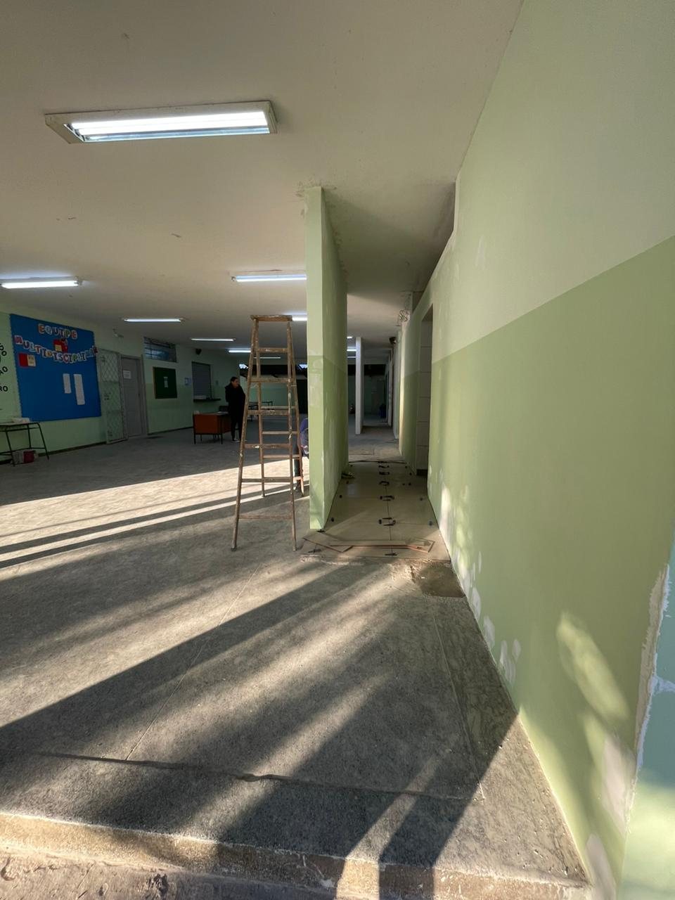
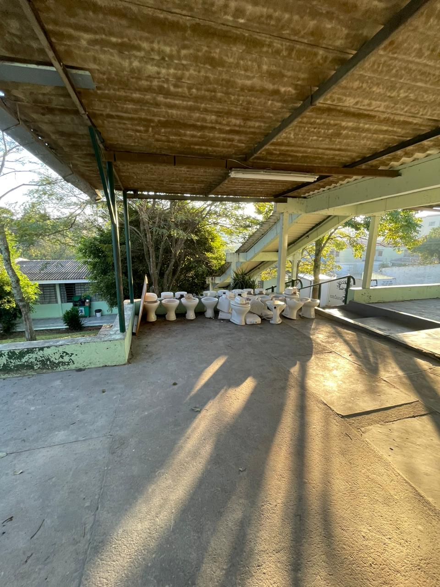

JORNAL DO JANSEN jj
COMO ESTÁ FICANDO A REFORMA DOS BANHEIROS?
Em relação aos banheiros, a previsão para termino do projeto e para daqui mais 1(um) mês, porque o banheiro não foi apenas reformado, e sim demolido e contruido do zero. Os banheiros ficaram com um estilo de banheiro de shopping, com portas de aluminio espelhos e lavadouros dentro do banheiro mesmo, os dos meninos vai contar como mictorios e será contruido um banheiro para caderirantes, por isso a contrução ira demorar um pouco mais
- 
-

- 